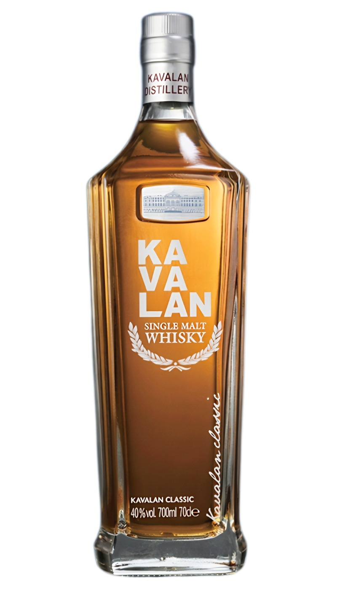
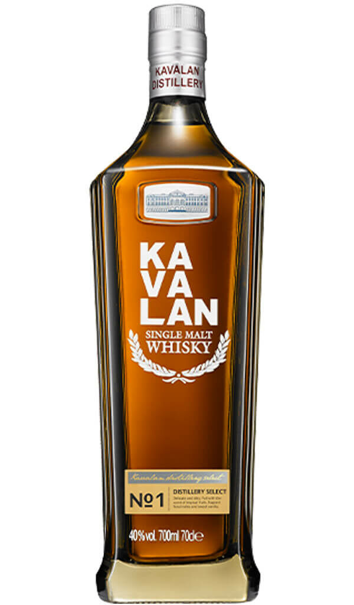
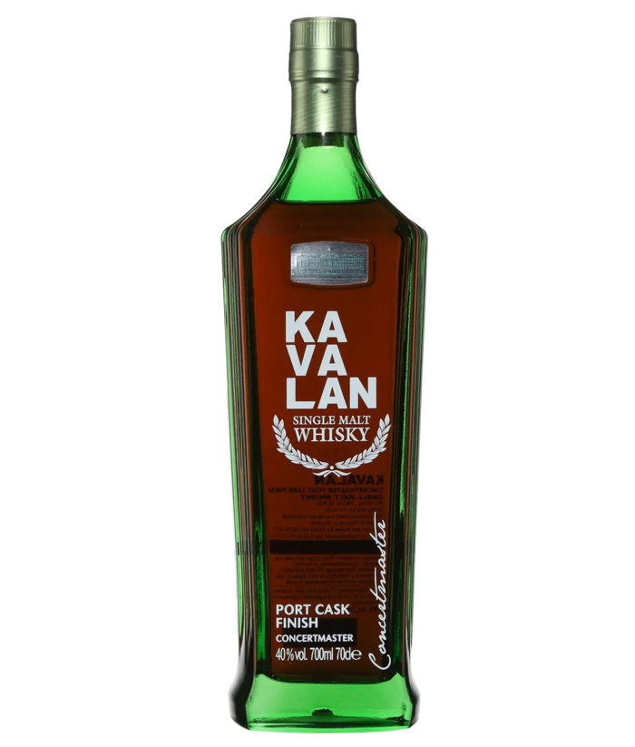
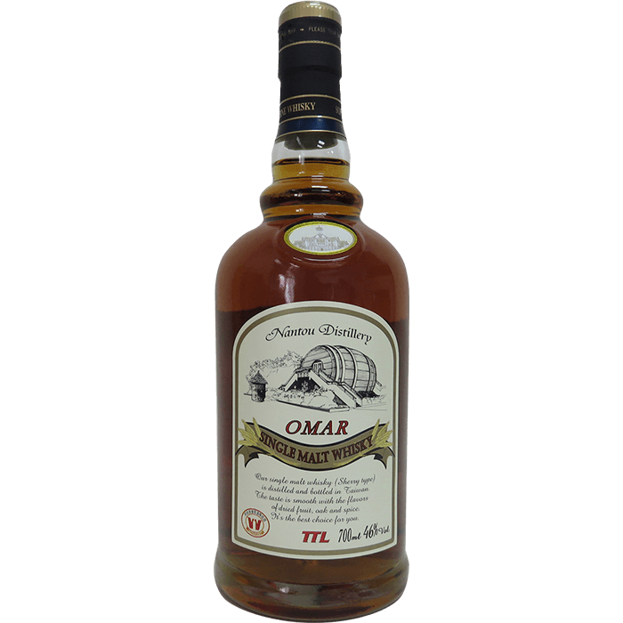
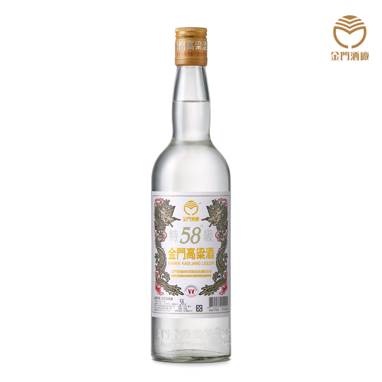
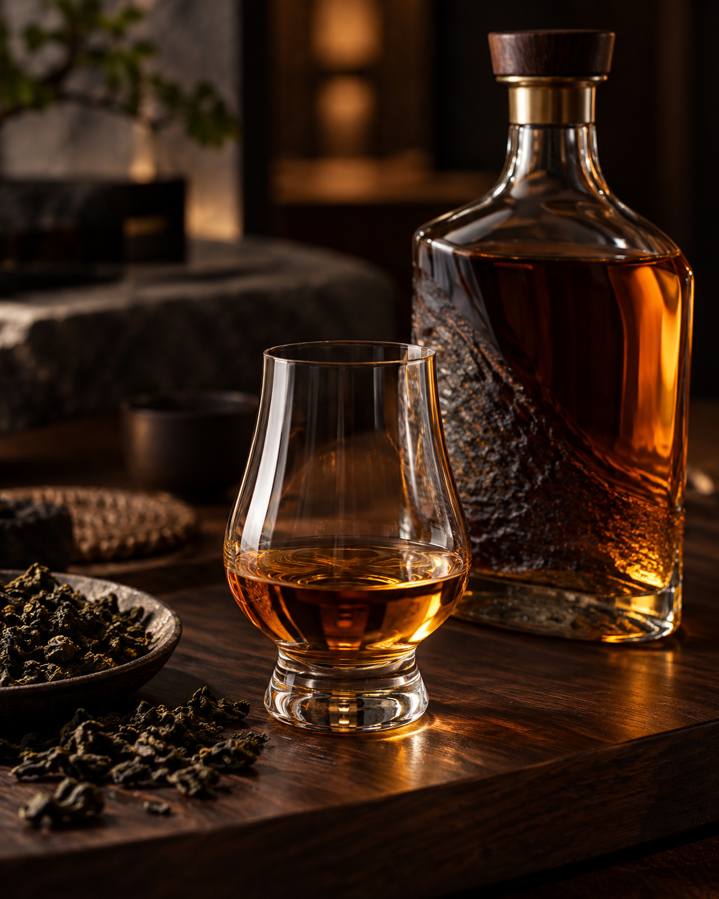

Khí hậu tạo nên nhịp trưởng thành khác biệt
Nhiệt độ ấm khiến rượu tương tác với gỗ mạnh và nhanh hơn những vùng khí hậu lạnh, tạo nên phong cách đậm hương, giàu trái cây và rất dễ nhận ra.
FabAlcohol mang những chai whisky và spirits Đài Loan đáng khám phá đến gần hơn — tuyển chọn có chủ đích, thông tin minh bạch và tư vấn nhanh qua Zalo.
Nhiệt độ ấm khiến rượu tương tác với gỗ mạnh và nhanh hơn những vùng khí hậu lạnh, tạo nên phong cách đậm hương, giàu trái cây và rất dễ nhận ra.
Kavalan là cánh cửa dễ bước vào nhất, nhưng phía sau còn có Nantou, rượu cao lương Kinmen và một văn hoá spirits bản địa đáng để khám phá.
Chúng tôi bắt đầu bằng hai chai Kavalan có vai trò rõ ràng, rồi chỉ mở rộng khi một sản phẩm thực sự đem lại thêm một trải nghiệm mới cho người uống tại Việt Nam.
Ở giai đoạn đầu, FabAlcohol chỉ tập trung vào Kavalan Classic và Distillery Select No. 1: một chai để bắt đầu khám phá whisky Đài Loan, một chai linh hoạt cho nhịp uống thường ngày. Ít lựa chọn hơn, nhưng mỗi lựa chọn đều dễ hiểu và có lý do để tồn tại.

Ly whisky khiến người mới thấy dễ gần ngay từ lần đầu: xoài chín, lê, mật ong và vanilla mở ra sáng rõ, rồi khép lại bằng chút citrus và gỗ sồi ấm. Êm nhưng không nhạt — đủ đẹp cho buổi tối riêng, đủ chỉn chu để mang đi biếu.

Trái cây chín và hoa nhẹ dẫn vào kẹo bơ, vanilla cùng gỗ sồi mềm. Chất rượu tròn, mượt khi uống neat nhưng vẫn đủ tươi để pha highball — kiểu chai có thể mở bất cứ tối nào và chia sẻ với nhiều gu khác nhau.
* Đây là hai sản phẩm duy nhất FabAlcohol đang cân nhắc cho đợt nhập đầu tiên. Giá và thời gian về hàng chỉ được công bố sau khi nguồn mua và phương án logistics được xác minh.
FabAlcohol đang tìm hiểu nguồn hàng cho ba chai dưới đây. Chúng chưa thuộc đợt nhập đầu tiên, nhưng là những ứng viên tiếp theo nhờ ba trải nghiệm rất khác nhau: thùng port, chiều sâu sherry và cao lương đặc trưng Kinmen.

Trái đỏ, caramel, mật ong và gia vị ngọt tạo nên một ly tròn, thơm và quyến rũ. Chai xanh nổi bật biến nó thành lựa chọn quà tặng có điểm nhấn, hoặc ly cuối buổi đáng chờ đợi.

Mật nhãn và xoài chín dẫn vào nho khô, mận, bánh cam và chocolate đen. Thân rượu 46% đầy đặn cho người muốn bước sang một phong cách sherry sâu hơn, nhưng vẫn giữ nét ngọt dễ mến.

Trong veo nhưng hoàn toàn không hiền: hương cao lương sạch, vị ngọt mát rồi sức nóng 58% lan nhanh và khô gọn. Một biểu tượng Đài Loan mạnh mẽ, đặc biệt sống động khi dùng cùng món nướng hoặc hải sản đậm vị.
* Tình trạng nhập, giá và thời điểm dự kiến sẽ được cập nhật sau khi nguồn hàng được xác minh.
Hai sản phẩm dưới đây là shortlist dự kiến cho đợt mở bán đầu tiên. Giá bán tại Việt Nam sẽ chỉ được công bố sau khi xác minh đầy đủ nguồn mua, thuế và phương án vận chuyển hợp pháp.
Vừa mở nắp là xoài chín, lê, mật ong và vanilla lan ra — sáng, mềm, không làm người mới thấy khó gần. Một chai đẹp để rót sau ngày dài, mang tới bàn tiệc, hoặc chọn làm quà khi bạn muốn an toàn mà vẫn có câu chuyện Đài Loan.
Trái cây nhiệt đới gặp kẹo bơ và vanilla trên nền gỗ sồi êm. Mượt, tròn, dễ uống neat nhưng cũng đủ tươi cho highball — một chai có thể chiều nhiều gu mà không hề nhạt nhòa.
Một dải lựa chọn vừa đủ để khách mới dễ chọn, người đã uống whisky vẫn có thứ để khám phá. Các nhãn tình trạng bên dưới là cấu trúc minh hoạ và sẽ được cập nhật bằng dữ liệu thực tế.
Xoài chín, lê, mật ong và vanilla mở ra trong chất rượu êm, sáng và cân bằng. Chai nhập môn rất dễ yêu — đủ dịu cho người mới, đủ cá tính để kể câu chuyện whisky Đài Loan.
Trái cây nhiệt đới, kẹo bơ và vanilla ôm lấy nền gỗ sồi mềm. Mượt khi uống neat, tươi khi pha highball — một chai linh hoạt để mở bất cứ tối nào cũng đúng.
Lớp finish thùng port đem tới trái đỏ, caramel, mật ong và gia vị ngọt. Màu chai xanh nổi bật, chất rượu tròn quyến rũ — rất hợp cho ly cuối buổi hoặc món quà muốn gây ấn tượng.
Mật nhãn và xoài chín dẫn vào nho khô, mận, bánh cam và chocolate đen. Thân rượu 46% đầy đặn, ngọt sâu nhưng không nặng — một giọng sherry rất riêng của Nantou.
Trong veo nhưng không hiền: hương cao lương sạch, vị ngọt mát đầu lưỡi rồi sức nóng 58% lan nhanh và khô gọn. Nhấp từng ngụm nhỏ cùng món nướng hay hải sản đậm vị để hiểu một biểu tượng spirits rất khác whisky.
Một chai cụ thể, một gu riêng hoặc một ngân sách quà tặng — FabAlcohol sẽ tìm shortlist phù hợp.
* Tình trạng và giá hiển thị trong bản proposal chỉ minh hoạ cho cấu trúc catalogue, chưa phải cam kết bán hàng. Thông tin hương vị được biên tập từ mô tả nhà sản xuất; quy cách và bao bì có thể khác theo thị trường.
Hình chai là ảnh sản phẩm thực tế dùng để nhận diện; bao bì cuối cùng sẽ được đối chiếu theo lô hàng sourcing.

Xây dựng shortlist từ thị trường bản địa thay vì chỉ lặp lại những gì đã phổ biến.
Thông tin nguồn mua, quy cách, tình trạng và giá được tách bạch; điều chưa xác minh sẽ được nói rõ.
Không cần biết quá nhiều về whisky để chọn đúng chai hợp gu, dịp uống và ngân sách.
Ưu tiên trải nghiệm trong ly và tổng giá trị, không chạy theo độ hiếm hay câu chuyện phô trương.
Nói nhu cầu thật — uống, biếu tặng hay tìm chai cụ thể — và nhận gợi ý ngắn gọn.
FabAlcohol là một dự án tuyển chọn whisky và spirits Đài Loan cho người uống tại Việt Nam. Bắt đầu từ khách hàng cá nhân ở TP.HCM, chúng tôi hướng tới một cách mua gần gũi hơn: có câu chuyện vừa đủ, thông tin đủ rõ và một người thật để hỏi khi cần.
Giai đoạn tiếp theo có thể mở rộng sang quà tặng doanh nghiệp, đơn hàng nhóm và hợp tác B2B — sau khi mô hình nguồn hàng được xác minh.
Đây là ý của phần B2B: website chính vẫn nói với người mua cá nhân. Nhu cầu quà tặng doanh nghiệp, đơn nhóm hoặc hợp tác phân phối được giữ thành một hướng riêng, để không làm trải nghiệm mua chai đầu tiên trở nên phức tạp.
Hai chai Kavalan được tuyển chọn rõ ràng, câu chuyện dễ hiểu và tư vấn trực tiếp qua Zalo theo gu, dịp uống hoặc nhu cầu biếu tặng.
Khi nguồn hàng và vận hành đã ổn định, FabAlcohol có thể tiếp nhận brief quà tặng doanh nghiệp, đơn nhóm và trao đổi B2B trong một luồng riêng — không trộn với cam kết bán lẻ hiện tại.
Chưa phải tất cả. Đây là bản proposal; hai chai đầu là shortlist dự kiến mở bán. Tình trạng thật sẽ được cập nhật sau khi hoàn tất nghiên cứu sourcing và phương án vận chuyển hợp pháp.
Giá chỉ được chốt khi đã có đủ giá mua, thuế/phí và chi phí logistics. FabAlcohol sẽ không dùng giá tạm như một cam kết bán hàng.
Có. Gửi tên chai, ảnh tham khảo hoặc mô tả gu và ngân sách qua Zalo. FabAlcohol sẽ phản hồi khả năng sourcing và báo giá khi có dữ liệu xác minh.
Phạm vi giao hàng chưa được cam kết trong giai đoạn proposal. TP.HCM là thị trường ưu tiên ban đầu; các khu vực khác sẽ được xác nhận theo từng yêu cầu và quy định áp dụng.
Đây là hướng phát triển tiếp theo. Hiện tại bạn vẫn có thể gửi brief qua Zalo để FabAlcohol ghi nhận và đánh giá phương án phù hợp.
Chọn đúng lý do bạn đang liên hệ. Khi link Zalo chính thức được cập nhật, FabAlcohol sẽ mở cuộc trò chuyện với nội dung phù hợp thay vì bắt bạn phải viết lại từ đầu.
Link Zalo sẽ được kích hoạt khi thông tin liên hệ chính thức được cung cấp.